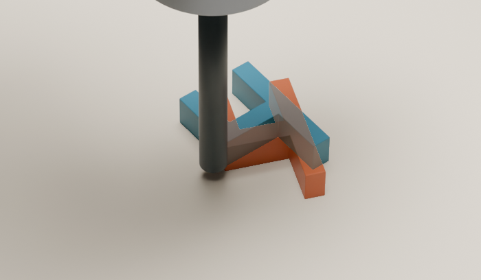
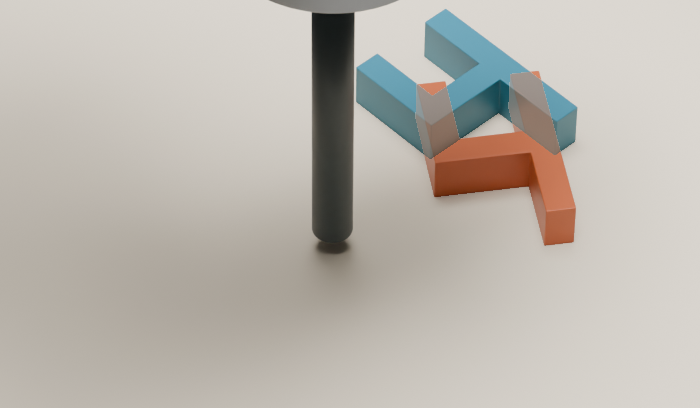
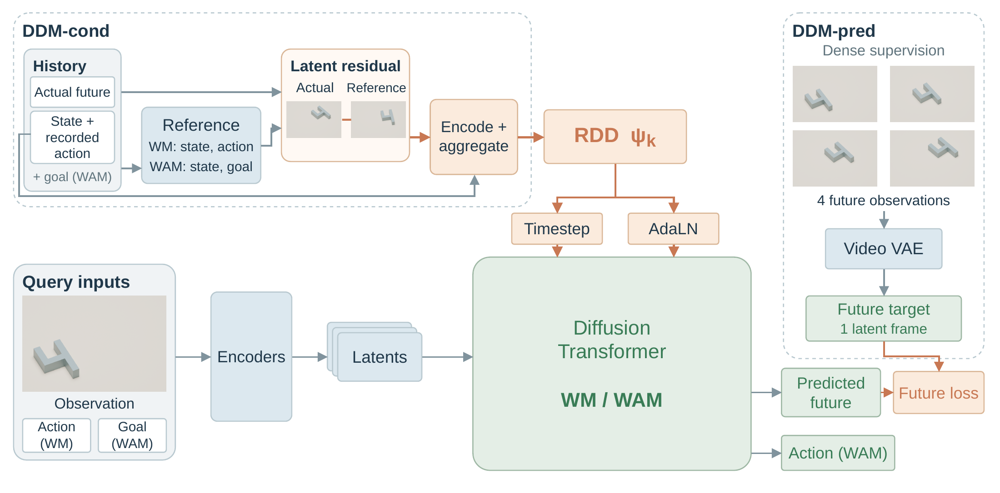
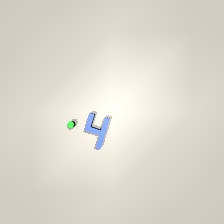
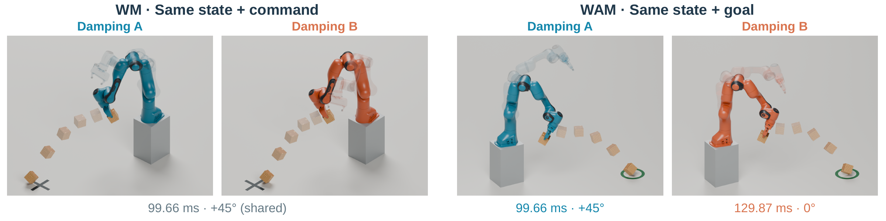

A residual dynamics descriptor
Encode actual-minus-reference future latents into an RDD that modulates the diffusion transformer through its timestep and AdaLN interfaces.
Three states · Swipe to compare →


Which future should the world model predict?
The same scene can hide different dynamics. DDM conditions prediction and action generation on the offset between an actual future and the future a frozen reference model expected.
Video generative models serve robotics as action-conditioned world models and goal-conditioned world-action models. When dynamics change without altering appearance, identical actions can yield different futures and identical goals can require different actions. Raw interaction history records what happened, but does not express how that outcome differs from what the model expected.
We introduce DDM, a video-diffusion framework that converts model-relative prediction error into context. DDM-cond compares realized futures with a frozen dynamics-blind reference and aggregates latent offsets into a residual dynamics descriptor, without dynamics labels. DDM-pred complements this context by packing transient observations into the existing future latent budget.
We evaluate separately trained world models and world-action models in simulation on pushing with hidden center-of-mass shifts and tossing with hidden robot actuation variations. On pushing with eight context interactions, residual conditioning improves dynamics identification from 31.96% to 44.25% over matched history, while DDM improves open-loop action success by 12.38 percentage points over matched Cosmos Policy.
Past interactions reveal dynamics. DDM makes that evidence specific to the model: compare what actually happened with what a frozen reference expected.
Observations and actions describe past behavior.
Aggregate latent offsets with recorded states and actions, then condition the next prediction or action.
No numeric dynamics labels are supplied. Context comes from a few earlier interactions under the same dynamics regime.
Encode actual-minus-reference future latents into an RDD that modulates the diffusion transformer through its timestep and AdaLN interfaces.
Replace the WAM’s repeated terminal target with four future observations. Preserve motion across the horizon within the existing future latent component.

WM uses standard dense supervision; DDM-pred names the WAM target change. Controlled-task WAM comparisons share dense targets; RoboCasa isolates dense versus repeated-terminal supervision.
The architecture family and latent interface are shared; weights, frozen references, and residual stores are separate. The WM reference is conditioned on the recorded action. The WAM reference is goal-conditioned and generates its own action and future, so its residual also reflects reference action choice and sampling variation.
Continuous replays of generated actions, synchronized across Cosmos Policy, two-stage history, and DDM. Watch the motion, then inspect how position and orientation errors evolve.
One open-loop action per model. Same initial state and visual goal within each comparison. Success requires both <1.5 cm position error and <2° yaw error. Curves use recorded simulator states; the dashed horizontal line marks the selected metric’s threshold. Shorter rollouts hold their evaluated final state. Replay verification ↗
Hidden robot damping changes command execution. Inspect the full flight with the original simulator camera.
These are selected goal-91 examples under damping (16,26) and (16,30), using the original nearest-of-180 action rule. Cosmos Policy selects candidate 45 and DDM selects candidate 100 in both clips; the displayed pair does not establish a change of action across conditions. Each method is held at its own first floor contact. Distances are raw goal errors, not oracle-relative regret. Both native contact states and full source images reproduce exactly. View replay verification ↗
Explore recorded simulation outputs across two tasks and two model settings.
Hidden center of mass
Hidden center of mass varies; appearance stays the same.

Current observationOne recorded action, shared by both predictorsInspect every locally decoded example, including cases where the improvement is small or the prediction misses. Compare the blind reference, raw-history conditioning, and DDM against the realized future.
12 push cases × 4 times × 4 views; 4 toss cases × 4 times × 4 views. These available examples form a convenience sample, not an aggregate evaluation. Sources and shared crops ↗
Matched comparisons from the current manuscript. Gains below are percentage points.
Push digit · World model
8 context interactions · Four regimes
Chance: 25%
Push digit · World-action model
8 context interactions · 800 evaluations
Matched dense-target reference
Success: <1.5 cm and <2°
RoboCasa · DDM-pred only
18 tasks improve · 1 ties · 5 decline
Descriptive single-checkpoint check
All methods, context sizes, and reported task results.
Hidden center-of-mass offsets change translation and rotation under a push. A single image leaves those dynamics ambiguous.
Robot damping changes how a command executes and where an identical cube lands. Release time and yaw form the two-dimensional action.
